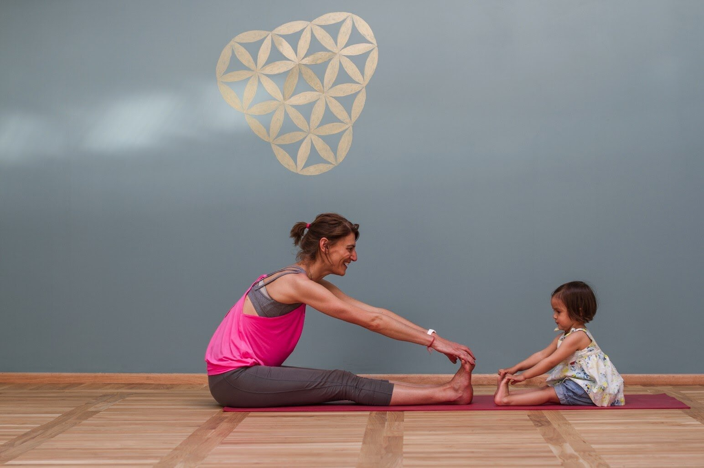

Nada es más beneficioso para un niño que compartir tiempo de calidad con los padres y si es practicando Yoga mucho mejor. Varios estudios científicos avalan los beneficios que trae esta disciplina para los niños y estos se multiplican cuando los más pequeños pueden compartir esta actividad con sus representantes.
Cuando los padres comparten el Yoga con sus hijos, los ayudan a estimular su creatividad, al mismo tiempo que refuerzan la disciplina y el autocontrol de una manera que puede ser muy divertida; esto se logra independientemente del estilo de aprendizaje del niño, que puede ser cinestésico, auditivo o visual.
Para que disfrutes de los beneficios del yoga con los más pequeños de la casa, aquí te enseñamos divertidas y lúdicas maneras de compartir esta disciplina con ellos:
1. Dibujar las posturas (interpersonal/visual-espacial)
Elaborar tarjetas didácticas sobre posturas de Yoga para usarlas en actividades y juegos futuros es una buena idea de compartir un tiempo saludable con los niños. Aquí te decimos cómo puedes realizar este divertido y lúdico juego:
- Esta actividad es ideal para hacerla con muchos niños, pero también sirve para uno solo, acompañado de un adulto.
- Si son varios niños, haz que se junten en grupos y elijan quién hará las posturas y quien será el artista.
- El que pose elegirá una postura para que el artista dibuje.
- Luego se pueden cambiar los roles.
2. Tapete musical (musical / corporal-kinestésico)
Este juego es más recomendable para grupos grandes de niños y se realiza de la siguiente manera:
- Pone una cantidad de mats en forma de círculo y que haya uno menos que la cantidad de niños que participan.
- Coloca tarjetas de yoga en la cabecera de cada mat.
- Pon una música divertida y deja que los niños bailen y canten alrededor de los mats.
- Cuando la música pare, los niños deben tomar la pose de la tarjeta que está en el mat donde se encuentren.
- El niño que se quede sin mat, quedará fuera y le tocará elegir la música que se debe poner a continuación.
3. Yo soy (interpersonal)
Este juego puede ser practicado por niños de varias edades. Es excelente para estimular la auto- reflexión, la imaginación y la creatividad. Se juega de la siguiente manera:
- Haz que los niños se acuesten y respiren profundamente mientras encuentran quietud en sus cuerpos.
- Pídeles que piensen en una cualidad que admiran, sugiriendo algunas como amabilidad, inteligencia, felicidad, paz, belleza, entre otras.
- Posteriormente, solicítales que repitan el mantra “Yo soy” e inserten en este la cualidad que ellos admiran.
Insta a los niños a que comiencen y terminen el día con este mantra en sus mentes.
Con estas actividades, te darás cuenta de que la práctica del Yoga no tiene que ser seria y formal, también puede ser una instancia de diversión para que compartas con tus hijos y estimules su salud emocional y espiritual, al mismo tiempo que refuerzas los lazos con ellos.